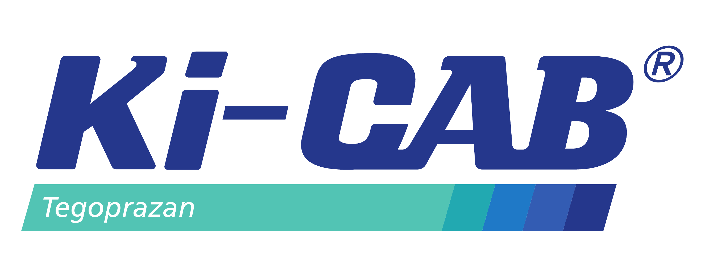

El primer P-CAB
con evidencia en México
con evidencia en México
tegoprazan · erradicación de Helicobacter pylori · nueva generación
Campaña 2026
Cargando ciclo…
Carnot Laboratorios

Medicamento de prescripción. Esta presentación es para profesionales de la salud.
Avalada por la Asociación Mexicana de Gastroenterología A.C. · 2026
Avalada por la Asociación Mexicana de Gastroenterología A.C. · 2026
⬤ Ciclo activo
—
Cargando mensaje del ciclo…
Disponibilidad · México
El primer P-CAB
disponible en México
disponible en México
Ki-CAB® (tegoprazan) cuenta con registro COFEPRIS y evidencia clínica en población mexicana — disponible para su paciente hoy.
Registro COFEPRIS — autorizado para uso en México con indicación en H. pylori
Evidencia local — datos en población mexicana disponibles
Avalado por la AMG — Asociación Mexicana de Gastroenterología A.C.
2 presentaciones — 10 mg y 30 mg · disponibles en farmacia especializada
🇲🇽
✓ Registro COFEPRIS
Ki-CAB® (tegoprazan)
Medicamento de prescripción · 2026
Disponible ahora
Farmacia especializada · consulta médica · hospitales de referencia
Carnot Laboratorios · México
Carnot Laboratorios · México